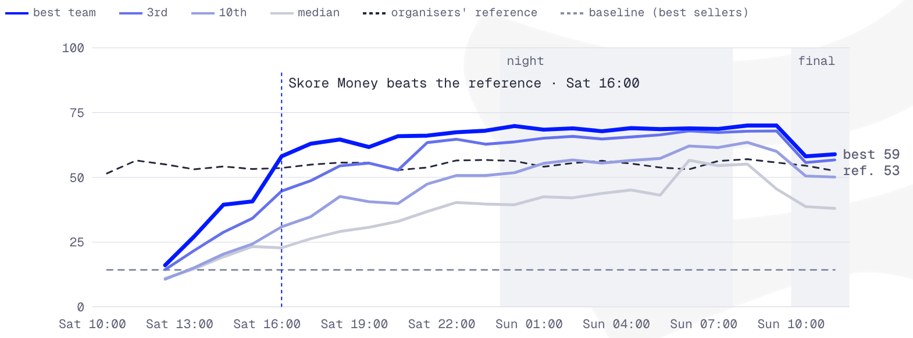

Un recomendador en tiempo real sobre RawTree.
Casi siempre, la línea de arriba somos nosotros.

Antes de modelar, medimos qué hace comprar.
Cuántas veces más se compra un producto mostrado · en gris, los dos porcentajes de compra que se dividen · histórico y feedback en vivo
Solo con señales, nuestra primera versión vendió lo mismo que los superventas: puntuación = popularidad × señales medidas.
El sistema, de principio a fin.
shop.requestscada 0,15 sQuién llega y qué está mirando
shop.eventscada segundoVistas, carritos y compras
shop.catalog_updatescada segundoPrecios, stock y productos nuevos
team_06.feedbackcada 2 sLo que vendió nuestro carrusel
Estado en vivo
60 días de histórico y cada evento del directo, aplicado uno a uno
1 · Reglas
5.200 → 1.000candidatos: lo popular × las señales del comprador
Variables
52 por candidatorecuentos y tasas, ningún identificador
2 · LightGBM × 2
¿Hará clic? × ¿Lo comprará?dos modelos de árboles (gradient boosting): 302 y 314 árboles
Tendencias
× la tendencialo que mide el detector en su subcategoría
Reglas fijas
10 productosen stock, no comprados, distintos
Histórico y feedback
2 M de sesiones y 14 M de eventos
Se reproduce la tienda
Con el mismo código que sirve: 3,3 M de filas
Entrenar y examinar
Dos LightGBM, tres exámenes, relevo
team_06.scratchEl porqué de cada producto
team_06.submissions10 productos por visita, en lote
Cómo se entrenan: reproduciendo la tienda.
Cada decisión del entrenamiento, y por qué la tomamos
- 3,3 M de filasUna por producto enseñado, del carrusel antiguo y de nuestro feedback. El feedback cuenta ×5: es el simulador real.
- El mismo códigoLa tienda se reproduce evento a evento con la función que sirve en vivo: nada ve el futuro, y en directo el modelo recibe los mismos números.
- 52 variables, ningún idRecuentos, tasas y coincidencias. Los atributos de la descripción dieron el mayor salto: de 1,81 a 2,42.
- Dos LightGBM¿Hará clic? × ¿comprará tras el clic? Hay tres veces más clics que compras: el primero aprende de más datos.
- La posiciónSe entrena sabiendo en qué hueco se enseñó cada producto y se sirve como si todos fueran el primero: no premia lo que ya iba arriba.
- El futuro, reservadoLos últimos 7 días del histórico y el último cuarto del feedback eligen cuántos árboles. Después se reentrena con todo.
Cada idea pasa tres exámenes.
- 1 · OfflineCon datos guardados: se reserva el futuro y la tienda se reproduce en orden. Ningún dato ve lo que viene después.
- 2 · Juez rápido¿Estaba en la lista lo que el comprador acabó comprando en la tienda? 2.384 compras que ningún modelo eligió.
- 3 · En vivoCada versión, con la métrica de los organizadores. Dos versiones idénticas difieren 0,12 en media hora: ese es el ruido.
El mismo paso (enseñar al modelo los atributos de los productos), visto por los tres
Offline
la compra, entre sus 3 primeros
Juez rápido
la próxima compra, entre sus 10
En vivo
compras por 100 visitas
Si no coinciden, manda el directo. Y la regla se escribe antes de mirar: una versión nueva solo entra si gana por más del doble del ruido.
Lo que no funcionó también está medido.
Seis ideas razonables que no pasaron los exámenes, y el número que las tumbó
- Las marcas que ya compróEn bruto parecía un ×2,2. En vivo no sumó: 1,70 frente a 1,81 sin ellas.
- Dar 20 veces más peso a lo de hoyBrilló una hora. En toda la tarde, con compradores nuevos: 2,66 frente a 2,96.
- Un modelo para cada tipo de visita+0,23 sobre la referencia. Con un solo modelo para todos, +0,38.
- Reentrenar con más datos y variablesEmpataba offline. En vivo perdió con los compradores conocidos: 1,76 frente a 1,99.
- «Quien compró esto compró aquello»×1,2 si solo se descuenta la posición. ×1,0 si se descuenta lo que el modelo ya predice.
- Un tercer modelo que reordena los diezOffline, +2,5 % de compras. En vivo, toda la noche: −4 %. No entró en la final.
La final la sirvió el modelo del sábado por la tarde, más las tendencias: nada de lo que probamos después lo superó.
El sistema aprende mientras sirve.
Compras por 100 visitas · clasificación pública de la ronda de práctica
cada marca, un cambio de versión en directo
- FeedbackEn el histórico, lo ya comprado era la mejor señal. En vivo: 1 compra en 10.497 impresiones. Ya no se enseña.
- ExploraciónEn práctica, un 20 % de listas barajadas: datos sin sesgo, a cambio de un cuarto de las ventas.
- TendenciasQué subcategoría se dispara, y cuánto: la detectamos a los 41 segundos.
- Cambios de precioEl precio se relee cada segundo. Una rebaja del 19 % vende ×1,2 en la tienda; subirla más en la lista no mejora nada.
- Arranque en fríoComprador nuevo: el 90 % ya ha hecho algo en directo. Producto nuevo: espera 20 minutos, antes nadie lo pulsa.
Vimos la tendencia a los 41 segundos.
Videoconsolas, sábado de 20:30 a 21:15 · cuántas veces más de lo habitual se vendió toda la subcategoría
leyendo solo las vistas y las compras del stream, cada segundo
52 compras donde el modelo esperaba 6, en 9.074 impresiones
El histórico no tiene ni una tendencia: solo se aprenden mirando la tienda en directo.
RawTree hace el trabajo pesado.
- Variables en SQLPopularidad, cuotas y tendencias se agregan dentro de RawTree sobre 14 M de eventos. Solo bajan tablas pequeñas.
- Leer y escribirVisitas cada 0,15 s; eventos y catálogo, cada segundo. Las respuestas se escriben en lote.
- ExplicarEn scratch queda el porqué de cada producto: cada prueba se explica con SQL.
- EmbeddingsNo hicieron falta. La señal que darían, «quien compró X compró Y», ya la recogen los atributos: lo medimos.
-- vistas y compras por minuto y subcategoría SELECT toStartOfMinute(e.ts::DateTime64(3)) AS t, c.subcategory::String AS sub, countIf(e.event_type::String = 'view') AS v, countIf(e.event_type::String = 'purchase') AS p FROM shop.events AS e JOIN shop.catalog AS c ON c.product_id::String = e.product_id::String GROUP BY t, sub
Sin esquema: todas las columnas son Dynamic. Se convierte cada clave y cada argumento (en verde).
Nuestro workflow agéntico.
- Javier Aranda: construir e iterar. El recomendador, el entrenamiento, las pruebas en directo y el servidor que sirvió la final.
- Hugo Juanola: preparar y revisar. Al principio, el repositorio para que los agentes supieran qué hacer: enunciado, datos y RawTree. Después, desde otra rama, sus agentes revisaban cada decisión.
- Los dos: todas las decisiones (qué se prueba, qué sirve la final) y esta presentación.
- AGENTS.mdEl contrato de cada sesión: misión, reglas y estado actual. Un agente no recuerda: lo que no se escribe se pierde.
- Un papel por sesiónUnas construyen y miden; otras, desde otra rama, revisan lo que se decide; otra vigila el marcador cada 15 minutos.
- Todo escritoCada medida va a findings.md con su fecha; cada despliegue, a un commit con su versión.
- Los límitesUna sola respuesta por visita, la clave nunca sale, y nada cambia en el servidor sin uno de los dos.
RawTree se deja usar por un agente: su skill oficial, su documentación en el repositorio y SQL de solo lectura.